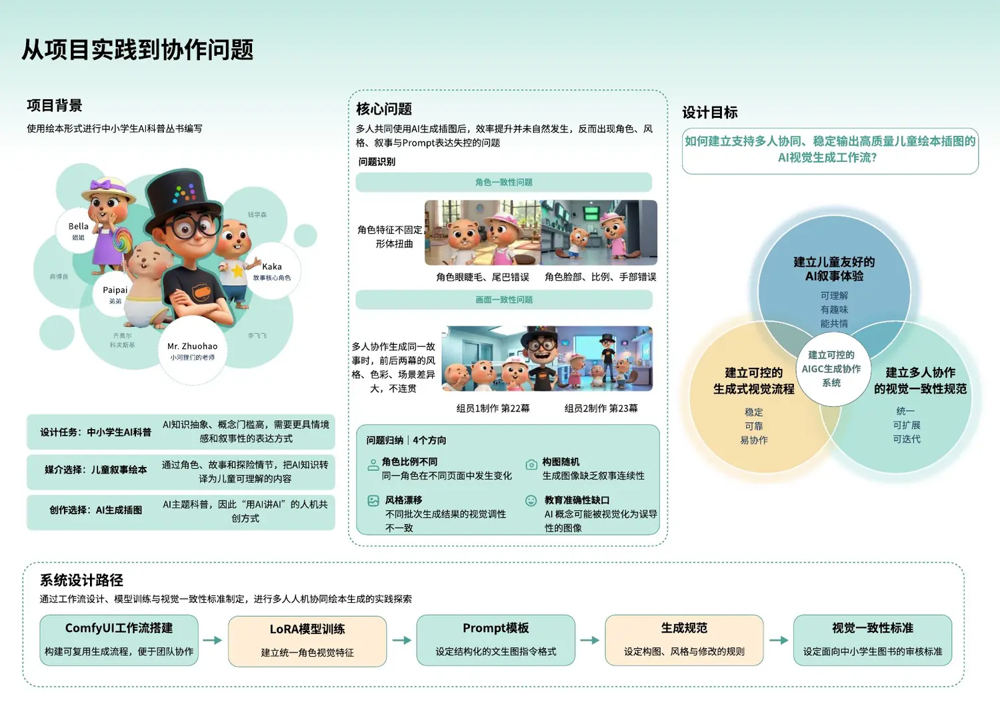
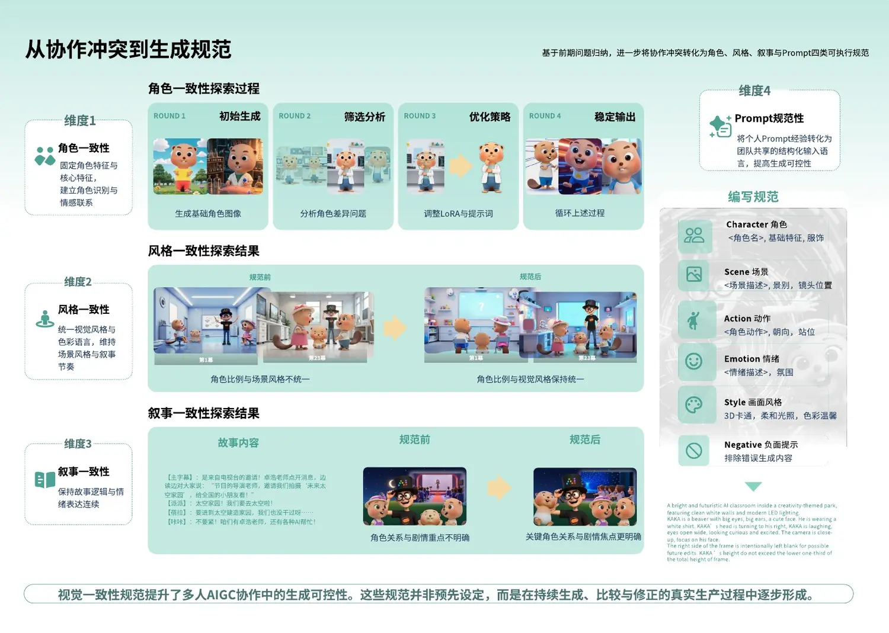
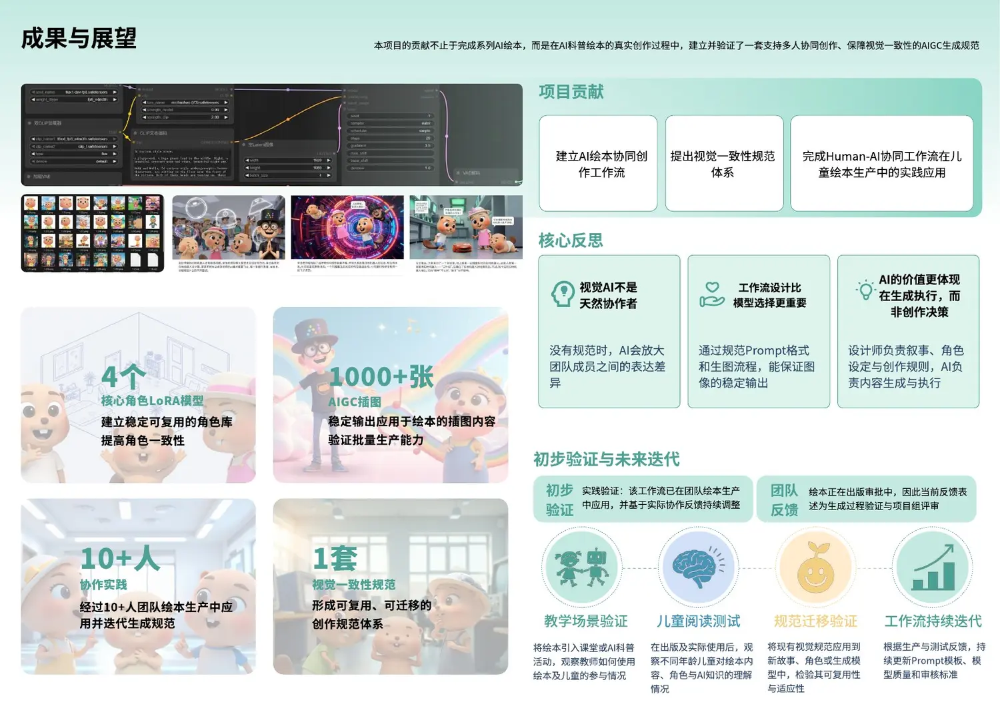

04 · Human–AI Co-creation
AI乐园奇遇记
从一次绘本生产实践出发，建立适用于多人协作的 AIGC 视觉生成规范，让角色、风格、场景与叙事保持一致。
01 · Problem
会生成图片，不等于能共同完成一本书
不同创作者分别使用 AI 时，角色、风格、构图与叙事表达很容易漂移。项目把实际制作中的反复试验转化为可共享、可审核的协作方法。

02 · Workflow
把创作者经验封装进生成系统
角色 LoRA
固定关键角色的外形特征，降低跨场景漂移。
Prompt 模板
统一角色、环境、镜头、风格和叙事情绪的描述层级。
生成规则
明确每一阶段的输入、输出和可调整范围。
视觉审核
在批量生产中检查角色、场景和叙事的一致性。

03 · Outcome
从单次制作经验到可复用的协作框架
完成 AI 插图批量生产，并沉淀出适用于儿童绘本的工作流。下一阶段可通过角色一致性指标、创作者任务交接成本与儿童阅读测试进一步验证方法。

返回项目列表